Clique no botão de Play, abaixo, para começar.
Após a animação, clique na terceira aba da lista vertical à direita.
Após a animação, clique na terceira aba da lista vertical à direita.
Obrigada Denito! Para iniciar o nosso assunto, vou contar um caso para vocês.
Em 21 de janeiro de 1986, o recém-nascido Pedro Braule Pinto foi sequestrado
do hospital Santa Lúcia, em Brasília. Seus pais biológicos, Maria Auxiliadora
R. B. Pinto e Jayro Tapajós, buscaram pelo paradeiro do filho por quase
dezessete anos. Tendo sido registrado como Osvaldo Borges Júnior, filho natural
de Vilma Martins e Osvaldo Borges, Pedrinho só soube a verdade em 2002, quando
uma denúncia anônima ao SOS criança alertou os pais biológicos que se submeteram
a um exame que comparou o DNA deles ao obtido a partir de um fio de cabelo do
rapaz. Descobriu-se posteriormente, que Vilma havia também sequestrado em 1979,
uma outra criança. Os resultados dos exames de DNA, além de revelarem a real
paternidade dos envolvidos, ainda serviu como prova para condenar Vilma a 15
anos e 9 meses de cadeia pelo crime de sequestro!
Você já se perguntou como fazem essas análises de DNA? Como fazem para extrair
esta molécula da célula? Vamos então para o quadro!
Existem várias técnicas para extrair, isto é, retirar o DNA de dentro das células do
organismo ou tecido que se quer estudar, mas todas elas envolvem as etapas a seguir:
rompimento das células,
separação do DNA de outros materiais orgânicos,
precipitação do DNA na solução, e
secagem e diluição.
Vamos entender o que acontece em cada uma destas etapas. Acompanhe.
Clique na sexta aba na lista vertical à direita para continuar.